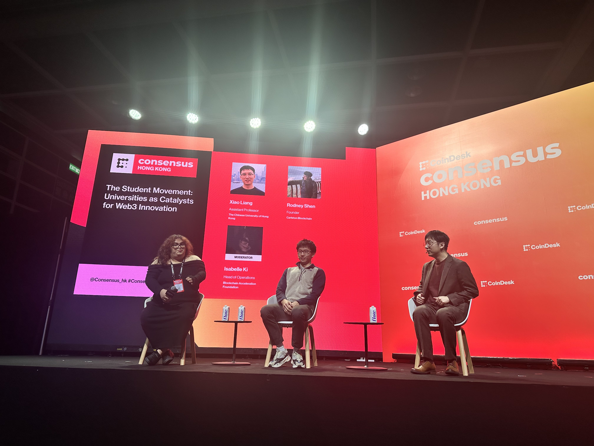
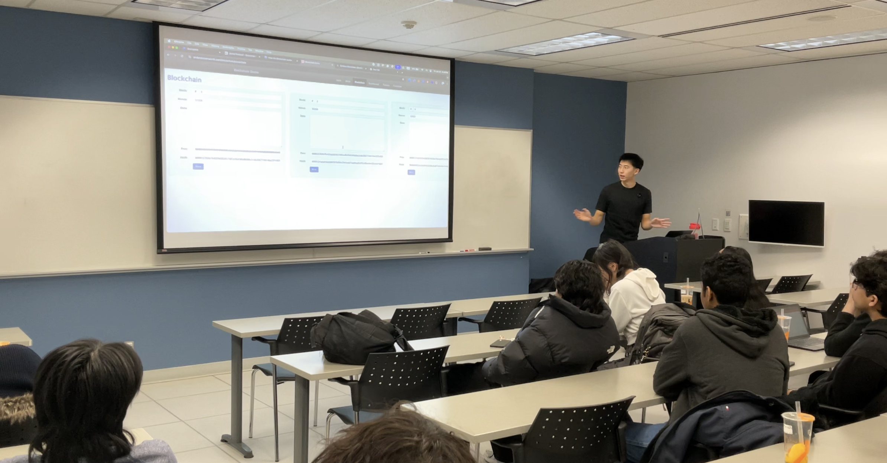
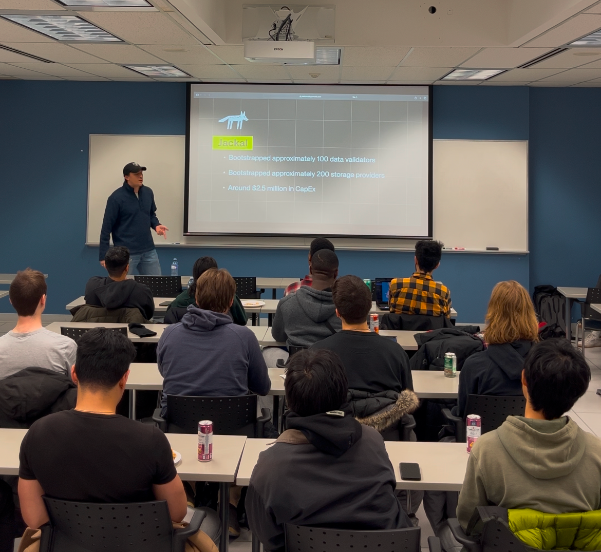

~ 4 min read
I believe that Blockchain will be the rails on which the next generation of unicorns are built upon. This is more than just high valuations but building software that provides genuine value for end users. It will be done by disrupting inefficient traditional applications of today.
Technologies like Stablecoins and ZK are already well on the way to changing the world. However, the coverage and awareness at the post secondary level from experience is next to nothing. No one at my school was doing anything about it so I decided I would. In Canada, we are 1 of the ~6 Blockchain clubs, out of 463 post-secondary institutions <1.37%.
Here are some amazing initiatives I've had the chance to work on:Consensus is one of the largest Crypto Web3 conferences in the entire world. Past speakers include Vitalik, CZ and many of the most influential people in the space. It was an incredible opportunity to share my experiences at the conference. Our talk - The Student Movement: Universities as Catalysts for Web3 Innovation , we discussed how clubs balanced competition with collaboration, how we onboarded and much more.
You can listen to the session here: Universities as catalyst for web3 innovation
Coinbase, arguably the most iconic brand in all of Crypto. We had Lucas Matheson (CEO of Coinbase's Canada branch) come in and talk to us about Crypto. He touched on numerous topics such as Canada's current economic climate, why starting your BTC reserve was sensible, shilled Coinbase, and much more. Huge thanks to Coinbase for sponsoring food!

Boba and Blockchains was my first workshop teaching the fundamentals of Blockchain technology. Understanding Blockchains is crucial as they form the foundation of Web3 - every innovation and application in the space builds upon this revolutionary technology. We also gave out large CoCo bubble teas - courtesy of Jackal Labs
This session was presented by Patrick, the Co-founder and CEO of Jackal. His talk delved into how the stars were aligning for the entire Crypto industry. Some of the main catalysts driving the change include the changing administration in the USA and the byproducts of that: the appointment of the Crypto and AI Czar, the removal of Gary Gensler's role as the SEC Chair, the acquisition of Bridge by Stripe and Trump's openness about making America the Crypto capital of the world. He also touched on real startups with profitable business in the space that could be only powered through Blockchain rails. Some notable ones include Helium, USDC/USDT, Akash and Jackal Protocol. This was an engaging talk that helped students truly see the real value being built onchain rather than the doomerism portrayed on the news. Food + drink sponsored by Jackal Labs and Cansbridge Scholars.
The genesis event. Our first started off with a boom by having my friend karim saadeh come in and give us the high level rundown on web3. Touching on a wide range of topics, it gave students a warm welcome in the vast and new world of web3.